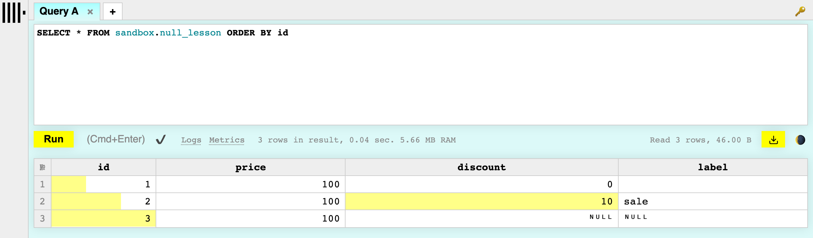
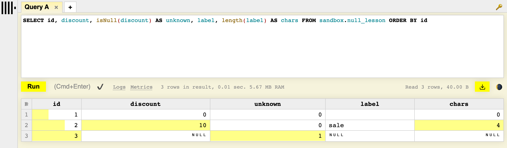
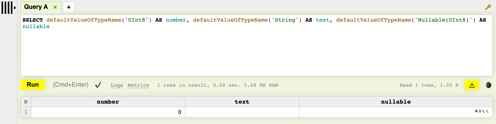
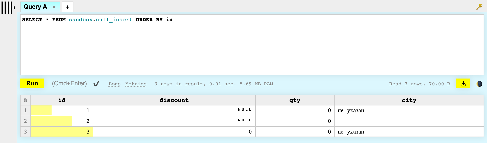
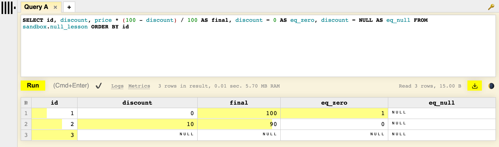
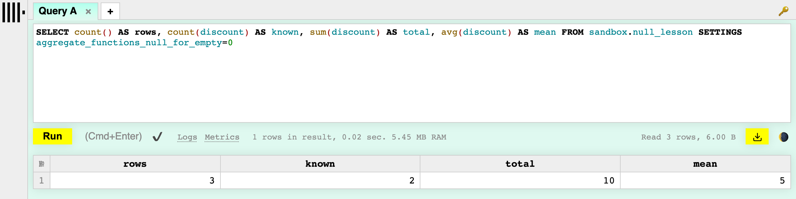
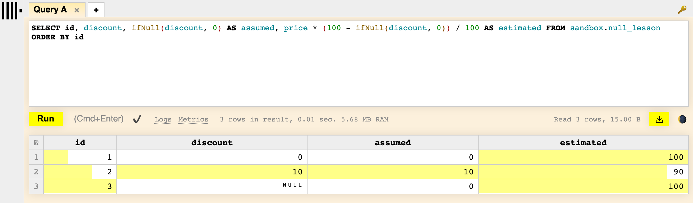
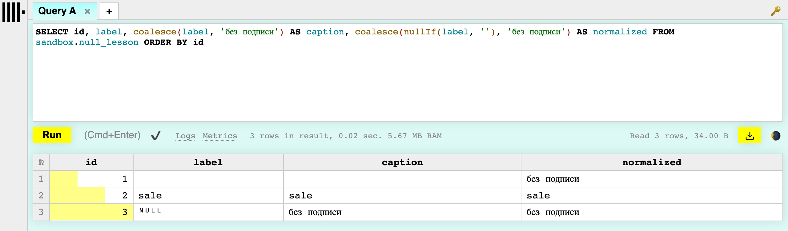

Справочник по ClickHouse · модуль 1 · первые данные
Глава 1.3
Пустое значение: DEFAULT и Nullable
У одного товара скидка равна нулю, у другого её размер ещё неизвестен. Если записать обоим ноль, отчёт перестанет различать эти состояния.
- Категория
- Первые данные
- Уровень
- Начальный
- Уже знаем
- строку и столбец, основные типы, простой SELECT
- Понадобится
- стенд 26.8.36.3, Play UI или clickhouse-client
Здесь разберём смысл пропусков, их запись и влияние на расчёт. Устройство таблиц, пакетную вставку и группировку изучим позже; необходимые команды для небольшого опыта приведены целиком.
§1Ноль, пустая строка и NULL
Зачем этот шагОтделим факт «скидка 0 %» от отсутствия сведений о скидке, прежде чем считать цену.
0 — известное число. Пустая строка '' — известный текст длиной ноль символов. NULL — специальная отметка отсутствующего значения. Она принадлежит отдельному состоянию данных. Его смысл задаёт модель: в нашем опыте скидка с NULL пока неизвестна.
Создадим три строки с ценой 100. В столбце discount будет скидка в процентах, в label — подпись. Nullable(T) разрешает значения типа T и NULL.
В Play UI откройте http://localhost:8123/play и выполните команды ниже по одной: вставьте команду в поле запроса и нажмите Run. В clickhouse-client команды можно выполнять последовательно. База sandbox — песочница для собственных таблиц; CREATE DATABASE IF NOT EXISTS создаёт её, только если её ещё нет.
CREATE DATABASE IF NOT EXISTS sandbox;
CREATE TABLE sandbox.null_lesson (
id UInt8,
price UInt16,
discount Nullable(UInt8),
label Nullable(String)
) ENGINE = Memory;
INSERT INTO sandbox.null_lesson VALUES
(1, 100, 0, ''),
(2, 100, 10, 'sale'),
(3, 100, NULL, NULL);
SELECT * FROM sandbox.null_lesson ORDER BY id;CREATE TABLE создаёт таблицу с перечисленными столбцами. ENGINE = Memory означает хранение в оперативной памяти: строки этого опыта не сохранятся после перезапуска сервера. INSERT … VALUES добавляет строки в порядке столбцов; ORDER BY id в SELECT упорядочивает вывод по номеру. Для опыта достаточно этих команд.
| id | price | discount | label | Что известно |
|---|---|---|---|---|
| 1 | 100 | 0 | '' | Скидка нулевая, подпись пустая. |
| 2 | 100 | 10 | sale | Скидка 10 %, подпись заполнена. |
| 3 | 100 | NULL | NULL | О скидке и подписи нет сведений. |

Получилось, если в discount три разных состояния: 0, 10 и NULL. Кавычки у пустой строки в таблице выше добавлены для различения; интерфейс показывает пустую ячейку. Разберём, как тип столбца сохраняет различие между нулём и NULL.
§2Как Nullable различает ноль и NULL
Зачем этот шагПоймём, почему NULL не нужно кодировать особым числом.
В Nullable(UInt8) внутренний тип UInt8 задаёт числовые значения, а обёртка Nullable добавляет возможность хранить NULL. Ноль сохраняется как числовое значение. Рядом со значениями есть маска NULL — служебная последовательность отметок по строкам: 0 означает, что значение есть, 1 — что нужно вернуть NULL.
Проследим чтение двух строк. Проверим, какое SQL-значение получится после учёта маски.
число 0, маска 0число ·, маска 1· — внутреннее число для этой строки не используется как результат1: вернуть отметку NULL.
0NULLВ первой строке результат — настоящий ноль. Во второй результатом будет NULL независимо от внутреннего числа. Поэтому проверка isNull(x) возвращает 1 для NULL и 0 для известного значения; проверять сам ноль вместо маски было бы ошибкой.
Запись AS имя задаёт имя столбца результата. Для текста добавим length(x) — функцию длины строки в байтах. На пустой строке это 0, на нашей латинской подписи sale — 4.
SELECT id, discount, isNull(discount) AS unknown,
label, length(label) AS chars
FROM sandbox.null_lesson ORDER BY id;
По-простому: незаполненная графа анкеты
В бумажной анкете ответ «0 детей» отличается от незаполненной графы. Ноль участвует в подсчёте, пустая графа не сообщает число. Что есть что: анкета — строка, графа — столбец, отсутствие ответа — NULL.
Граница аналогии: в таблице нет физически отсутствующей ячейки: у каждой строки есть этот столбец. Nullable хранит отметку отсутствия значения. Причину — «не ответили», «не спрашивали» или «сведения потеряны» — сама отметка не кодирует; для различения причин нужен отдельный признак.
Есть ли у Nullable дополнительная стоимость?
Да: для маски в несжатом представлении используется байт на строку. Из этого устройства нельзя вычислить память целого запроса или размер файлов. Сжатие маски, выделенная память и время запроса — разные показатели. В этой главе нет опыта, который позволял бы назвать процент замедления или прибавку на диске.
Получилось, если строка 1 имеет unknown = 0, а строка 3 — unknown = 1. Теперь проверим, что происходит, когда клиент вообще не передаёт значение столбца.
§3Значения по умолчанию типа и столбца
Зачем этот шагОпределим, что записать в столбец, когда вставка не передаёт для него значение.
У типа есть значение по умолчанию. Для уже знакомого числового UInt8 это 0, для String — '', для Nullable(UInt8) — NULL. Функция defaultValueOfTypeName принимает название типа строкой и показывает его значение по умолчанию.
SELECT defaultValueOfTypeName('UInt8') AS number,
defaultValueOfTypeName('String') AS text,
defaultValueOfTypeName('Nullable(UInt8)') AS nullable;
Столбцу можно назначить другое правило через DEFAULT в его описании. Например, city String DEFAULT 'не указан' задаёт текст для пропуска города при вставке. Значение по умолчанию самого типа String остаётся пустой строкой.
DEFAULT задаёт правило заполнения. Происхождение сохранённого значения отдельно не отмечается. Если после вставки хранится 'не указан', по одному этому тексту нельзя узнать, подставил его сервер или отправил клиент.
Вы различаете две вещи: значение по умолчанию типа и выражение DEFAULT конкретного столбца. Проверим их действие на вставке.
§4Пропуск столбца и явный NULL при вставке
Зачем этот шагСопоставим отправленные данные с сохранёнными: после вставки часть различий уже нельзя восстановить.
Создадим вторую таблицу. Здесь у discount значение по умолчанию типа — NULL, у qty — 0, а у city задан DEFAULT. В первой вставке список (id) означает, что клиент передаёт только id; остальные столбцы пропущены.
CREATE TABLE sandbox.null_insert (
id UInt8,
discount Nullable(UInt8),
qty UInt8,
city String DEFAULT 'не указан'
) ENGINE = Memory;
INSERT INTO sandbox.null_insert (id) VALUES (1);
INSERT INTO sandbox.null_insert VALUES (2, NULL, 0, '');
INSERT INTO sandbox.null_insert VALUES (3, 0, 0, 'не указан');
SELECT * FROM sandbox.null_insert ORDER BY id;
Строки 1 и 3 содержат одинаковые qty и city, хотя в первом случае значения подставлены, а в третьем отправлены явно. Пропуск существует на входе. В сохранённой строке каждый столбец уже получил значение. Явная пустая строка во второй вставке не запускает DEFAULT.
Если передать NULL в обычный String
В city String NULL хранить нельзя. Но это ещё не определяет, будет ли ошибка на входе: поведение зависит от способа вставки и настроек. Вставим одну и ту же входную строку (4, NULL) через формат VALUES. Настройка input_format_null_as_default управляет обработкой NULL для обычных, не Nullable-столбцов при таком вводе. SETTINGS имя=значение задаёт настройку только для этой команды.
INSERT INTO sandbox.null_insert (id, city) SETTINGS input_format_null_as_default = 0 VALUES (4, NULL);
Code: 53. … Cannot insert NULL value into a column of type 'String' (TYPE_MISMATCH)
Эта строка не добавлена. Теперь разрешим замену, оставив тот же формат и те же данные:
INSERT INTO sandbox.null_insert (id, city) SETTINGS input_format_null_as_default = 1 VALUES (4, NULL); SELECT * FROM sandbox.null_insert WHERE id = 4;
Здесь WHERE id = 4 оставляет в выводе только строку с номером 4. Получаем id=4, discount=NULL, qty=0, city='не указан': подставился DEFAULT столбца city. В Nullable-столбец явный NULL по-прежнему записывается как NULL.
Что меняется при другом способе вставки
Для INSERT … SELECT, то есть вставки результата запроса, используется другая настройка — insert_null_as_default. В формате JSONEachRow каждая строка входа — отдельный JSON-объект с именами столбцов. При пропущенном поле применение выражения DEFAULT зависит от input_format_defaults_for_omitted_fields. Эти два случая нельзя выводить из опыта с VALUES.
Проверить INSERT SELECT и пропущенные поля JSONEachRow
CAST(NULL AS Nullable(String)) задаёт тип отсутствующего текстового значения. При insert_null_as_default=0 команда ниже завершается ошибкой 349 CANNOT_INSERT_NULL_IN_ORDINARY_COLUMN; при 1 добавляет строку с city='не указан'.
INSERT INTO sandbox.null_insert (id, city) SELECT 5, CAST(NULL AS Nullable(String)) SETTINGS insert_null_as_default = 0;
Далее две команды JSONEachRow выполняйте отдельно. В обеих входных строках отсутствует city, но настройки различаются:
INSERT INTO sandbox.null_insert
SETTINGS input_format_defaults_for_omitted_fields = 0
FORMAT JSONEachRow
{"id":6}INSERT INTO sandbox.null_insert
SETTINGS input_format_defaults_for_omitted_fields = 1
FORMAT JSONEachRow
{"id":7}SELECT * FROM sandbox.null_insert WHERE id >= 6 ORDER BY id;
| id | discount | qty | city |
|---|---|---|---|
| 6 | NULL | 0 | '' |
| 7 | NULL | 0 | не указан |
При 0 пропущенный city получил значение по умолчанию типа String. При 1 вычислен DEFAULT столбца. Это опыт с отсутствующим полем, не с JSON null. Полный разбор форматов — в модуле 4.
Посмотрите реальные настройки своего сеанса: system.settings — системная таблица настроек, а IN здесь отбирает перечисленные имена.
SELECT name, value FROM system.settings
WHERE name IN ('input_format_null_as_default',
'insert_null_as_default',
'input_format_defaults_for_omitted_fields')
ORDER BY name;На проверенном стенде все три значения равны 1. Это не обещание для любого сервера: профиль пользователя или настройка запроса может их изменить. Для повторения опыта значения заданы явно. Дальше используем сохранённые строки в вычислениях и условиях.
§5NULL в вычислении и отборе строк
Зачем этот шагПосчитаем цену и найдём строки, которым пока нельзя назначить итоговую сумму.
Формула price * (100 - discount) / 100 применяет процент скидки. Если скидка неизвестна, вычислить итоговую цену по этой формуле нельзя: результат — NULL. Сравнение discount = 0 тоже возвращает NULL для неизвестной скидки: ответ пока неизвестен.
SELECT id, discount,
price * (100 - discount) / 100 AS final,
discount = 0 AS eq_zero,
discount = NULL AS eq_null
FROM sandbox.null_lesson ORDER BY id;
NULL = NULL даёт NULL: отметка отсутствия данных не сообщает, равны ли неизвестные значения. Поэтому WHERE discount = NULL не находит даже строку 3. WHERE оставляет строки, для которых условие истинно; 0 и NULL строку не пропускают. Для проверки отсутствия есть условие IS NULL.
Проследим отбор, чтобы объяснить, почему «не равно нулю» не включает неизвестную скидку.
id 1 → 0id 2 → 10id 3 → NULLid 1 → 0 (нет)id 2 → 1 (да)id 3 → NULLid 2Прошла только строка с истинным условием.Строка 3 не прошла, потому что результат сравнения неизвестен. Если нужны и ненулевые, и неизвестные скидки, задайте оба условия через OR — логическое «или».
SELECT id FROM sandbox.null_lesson WHERE discount = NULL ORDER BY id; -- нет строк SELECT id FROM sandbox.null_lesson WHERE discount IS NULL ORDER BY id; -- 3 SELECT id FROM sandbox.null_lesson WHERE discount != 0 ORDER BY id; -- 2 SELECT id FROM sandbox.null_lesson WHERE discount != 0 OR discount IS NULL ORDER BY id; -- 2, 3
Правило «любая операция с NULL возвращает NULL» неверно. Например, isNull(NULL) возвращает 1. У логических операций тоже есть определённые результаты: ложь AND неизвестность — ложь; истина OR неизвестность — истина. Неизвестный второй ответ уже не меняет вывод.
SELECT NULL + 1 AS arithmetic, NULL = NULL AS equality,
isNull(NULL) AS empty,
0 AND NULL AS logical_and, 1 OR NULL AS logical_or;
-- NULL, NULL, 1, 0, 1Получилось, если IS NULL нашёл id 3, а != 0 — только id 2. Теперь посчитаем, сколько значений участвует в отчёте.
§6Сколько строк и по каким значениям считать
Зачем этот шагСоставим отчёт, в котором число товаров не подменяет число известных скидок.
Агрегатная функция вычисляет один результат по набору строк.
count()считает все строки.count(discount)считает значения discount, отличные от NULL.sum(discount)складывает известные скидки.avg(discount)делит их сумму на число известных значений.
Ноль участвует и в подсчёте, и в среднем.
SELECT count() AS rows, count(discount) AS known,
sum(discount) AS total, avg(discount) AS mean
FROM sandbox.null_lesson
SETTINGS aggregate_functions_null_for_empty = 0;
aggregate_functions_null_for_empty=0 отключает настройку, которая автоматически добавляет поведение «вернуть NULL для пустого набора» к агрегатным функциям. Фиксируем её, чтобы сравнение ниже не зависело от профиля сервера. Тип Nullable у аргумента продолжает влиять на результат.
Полностью NULL-набор и отсутствие строк
В первом случае строка есть, но известного числа нет. Во втором нет даже строки. Выполните тот же запрос, сначала добавив перед SETTINGS WHERE id = 3, затем заменив условие на WHERE id > 3.
| Вход discount | count() | count(discount) | sum(discount) | avg(discount) |
|---|---|---|---|---|
| 0, 10, NULL — все строки | 3 | 2 | 10 | 5 |
| NULL — только id 3 | 1 | 0 | NULL | NULL |
| Нет строк — id > 3 | 0 | 0 | NULL | NULL |
На версии 26.8.36.3 с этим Nullable-столбцом обе функции возвращают NULL, если ни одного известного значения не поступило. Это не правило для любого типа аргумента. Для обычного qty UInt8 на пустом входе sum(qty) возвращает 0, а avg(qty) — nan («не число», числовое среднее не определено):
SELECT count(), count(qty), sum(qty), avg(qty) FROM sandbox.null_insert WHERE id > 10 SETTINGS aggregate_functions_null_for_empty = 0; -- 0, 0, 0, nan
Для отчёта теперь можно отличить «нет товаров» от «товары есть, но скидки неизвестны»: сравните count() и count(discount). Затем решите, что делать с отсутствующими значениями при выводе результата.
§7Замена должна отвечать задаче
Зачем этот шагНаучимся выводить запасное значение, не выдавая предположение за исходный факт.
Показать расчёт при условии, что неизвестная скидка равна нулю
Предположим, для предварительного расчёта требуется полная цена, пока скидка не согласована. ifNull(x, replacement) возвращает x, если это не NULL, иначе replacement. Используем её в выражении, сохранив исходный discount рядом. Это допущение для расчёта, не изменение данных таблицы.
SELECT id, discount, ifNull(discount, 0) AS assumed,
price * (100 - ifNull(discount, 0)) / 100 AS estimated
FROM sandbox.null_lesson ORDER BY id;
Такая замена меняет и знаменатель среднего. Проверьте её отдельно:
SELECT avg(discount) AS known_mean,
avg(ifNull(discount, 0)) AS assumed_mean
FROM sandbox.null_lesson
SETTINGS aggregate_functions_null_for_empty = 0;
-- 5, 3.33333333333333355 % — среднее среди двух известных скидок, включая известный ноль. 3,333… % — среднее по трём товарам при предположении, что неизвестная скидка равна нулю. Настоящее среднее по всем товарам из этих данных пока неизвестно.
Выбрать подпись и обработать пустую строку
Для подписи можно проверить несколько источников по приоритету. coalesce(a, b, …) выбирает первый аргумент, который не NULL. Аргументы должны иметь совместимые типы; здесь все они текстовые. Пустую строку функция не пропускает — для неё это известное значение.
Допустим, правило отображения считает пустую подпись отсутствующей. Тогда нормализуем данные: приведём оба обозначения отсутствия к NULL. nullIf(x, y) возвращает NULL, когда x равен y, иначе сохраняет x. Поэтому nullIf(label, '') превращает только пустую строку в NULL.
SELECT id, label,
coalesce(label, 'без подписи') AS caption,
coalesce(nullIf(label, ''), 'без подписи') AS normalized
FROM sandbox.null_lesson ORDER BY id;
Здесь nullIf меняет обозначение отсутствия перед выбором запасной подписи. Переносить этот приём на скидку без основания нельзя: nullIf(discount, 0) превратит настоящий ноль строки 1 в NULL, и отчёт потеряет известный факт.
Вы можете объяснить каждую замену правилом задачи: предварительная цена, запасная подпись или нормализация входа. Если такого правила нет, сохраните NULL и покажите отсутствие сведений.
§8Частые ошибки
После перезапуска таблицы есть, а строки исчезли
В опыте использован движок Memory. Снова подготовьте данные на своём стенде; повторное CREATE TABLE для существующей таблицы даст ошибку. Не перезапускайте общий сервер ради опыта. Постоянное хранение и устройство CREATE TABLE — следующая глава.
Таблица null_lesson уже существует
Подготовка рассчитана на одно выполнение. Сначала посмотрите SELECT * FROM sandbox.null_lesson ORDER BY id. Не запускайте INSERT повторно, если три строки уже есть: Memory не проверяет уникальность id, и повторы изменят агрегаты. Для нового опыта выберите другие собственные имена таблиц и замените их во всех запросах.
Поиск NULL вернул ноль строк
Проверьте условие: = NULL не проверяет отсутствие. Используйте IS NULL. Если и оно не нашло строки, посмотрите сохранённые значения: при загрузке в обычный тип отметка могла быть заменена. После такой замены восстановить причину по одному нулю нельзя.
NULL не принят при вставке или заменён текстом
Сначала проверьте тип через DESCRIBE sandbox.null_insert, затем способ вставки и настройки из §4. Нельзя исправить это универсальной командой «включить замену»: сначала решите, допустима ли потеря отметки отсутствия.
coalesce не подставил текст в пустую подпись
Проверьте length(label) и isNull(label). Длина 0 при isNull = 0 означает пустую строку, не NULL. Применять nullIf(label, '') нужно только при согласованном правиле, что пустая подпись считается отсутствующей.
Среднее выглядит точным, но часть скидок неизвестна
Показывайте рядом count() и count(discount). Не называйте среднее по известным значениям средним по всему каталогу, а результат с подставленными нулями — измеренным фактом. Проверьте также, не вставлены ли строки опыта повторно.
§9Проверьте себя
После загрузки city = «не указан». Можно ли утверждать, что город был пропущен?
Нет. Такой текст мог прийти явно, как в строке 3, или появиться из DEFAULT, как в строке 1. Если происхождение важно, при загрузке нужен дополнительный признак; одно сохранённое значение его не содержит.
Для скидок 0, 10 и NULL запрос с условием discount != 10 найдёт строки 1 и 3?
Только строку 1. Для строки 3 сравнение вернёт NULL, и WHERE её не пропустит. Если нужны и неизвестные значения, добавьте OR discount IS NULL. Так запрос включает неизвестные скидки как отдельную категорию.
Отчёт показал count() = 1, count(discount) = 0, sum(discount) = NULL. Нет ли в нём противоречия?
Нет: строка есть, известной скидки нет. Это полностью NULL-набор. Если бы строк не было, count() вернул бы 0. Число строк и число известных значений отвечают на разные вопросы.
Можно ли nullIf(discount, 0) использовать для «очистки пустых скидок»?
В нашей модели нельзя: ноль означает известную скидку 0 %. nullIf превратит этот факт в отсутствие значения. Для устаревшего источника, где 0 специально кодировал неизвестность, такое преобразование могло бы быть оправдано, но это уже другой договор о данных.
Самостоятельная задача: предварительный отчёт
По неизменённым трём строкам sandbox.null_lesson подготовьте два запроса:
- Найдите товары, для которых исходная формула цены не даёт числа. Выведите id, price и discount без замены NULL.
- Выведите число строк, число известных скидок и сумму скидок. Затем отдельно посчитайте среднюю скидку, если для предварительной оценки неизвестную принять за 0. В подписи результата укажите допущение.
Разбор решения и контрольный результат
SELECT id, price, discount FROM sandbox.null_lesson
WHERE discount IS NULL ORDER BY id;
-- 3, 100, NULL
SELECT count() AS rows, count(discount) AS known,
sum(discount) AS total
FROM sandbox.null_lesson
SETTINGS aggregate_functions_null_for_empty = 0;
-- 3, 2, 10
SELECT avg(ifNull(discount, 0)) AS mean_assuming_zero
FROM sandbox.null_lesson
SETTINGS aggregate_functions_null_for_empty = 0;
-- 3.3333333333333335Первый запрос находит строку, для которой нет исходного значения скидки. Во втором ноль учитывается как известное значение. Последний запрос меняет только выражение расчёта, не столбец; подпись отчёта должна сообщать «неизвестные скидки приняты за 0».
§10Краткая шпаргалка
| Задача | Запись | Проверка смысла |
|---|---|---|
| Хранить неизвестное число | Nullable(UInt8) | Ноль остаётся отдельным известным значением. |
| Заполнить пропуск при вставке | city String DEFAULT 'не указан' | Способ вставки и настройки должны применять DEFAULT. |
| Найти отсутствие | x IS NULL | Не x = NULL. |
| Оценить полноту | count(), count(x) | Все строки и известные значения. |
| Подставить одну замену | ifNull(x, replacement) | Замена — явно обоснованное правило. |
| Выбрать первый известный источник | coalesce(a, b, c) | Пустая строка не пропускается. |
| Превратить специальную метку в NULL | nullIf(x, marker) | marker не должен быть значимым фактом. |
Справка: missing и null при переносе из документов
Отсутствующее поле документа и поле со значением null могут означать разные состояния. В строке ClickHouse столбец существует всегда. Загрузчик должен явно решить, как представить каждое состояние: одним NULL, разными признаками или другим соглашением. Их объединение не является обязательным свойством переноса.
Воспроизводимость и источники
Все численные результаты и примеры ошибок проверены на отдельном ClickHouse 26.8.36.3, UTC. Подготовка таблиц; запросы, фактический вывод и ошибки. В сохранённом выводе TSV NULL обозначен \N, пустая строка — пустым полем. Условия запуска и дополнительные проверки находятся в протоколе главы.
Дальше — устройство CREATE TABLE и движки хранения. Здесь достаточно уметь проследить путь: что передал клиент → что сохранено → какие строки и значения участвовали в расчёте.